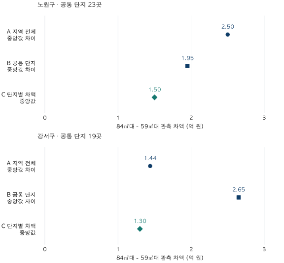

다음 집으로 가는 비용 · 같은 단지의 면적 확대
59㎡에서 84㎡로, 같은 단지 갈아타기 차액은 얼마일까?
노원·강서의 같은 단지에서 전용 59㎡대와 84㎡대의 관측 가격 차이를 비교합니다. 양쪽 거래가 충분한 표본의 포함률, 지역 중앙값 차이와 단지별 차액의 차이, 실제 추가 현금과의 구분을 확인하세요.
분석 기간 · 2026년 1~6월 계약 | 보유 자료 스냅샷 생성 · 2026-10-04
생활권을 유지하면서 전용59㎡대에서84㎡대로 넓히려면 얼마나 더 필요할까요? 지역별 두 가격만 빼면 서로 다른 단지를 비교하기 쉽습니다. 2026년 상반기 노원·강서에서 두 면적이 각각5건 이상 거래된 같은 단지를 골라, 단지별 가격 차이를 먼저 계산했습니다.
전용59㎡에서84㎡로 가는 것이24평에서34평으로 가는 뜻인가요?
이 글에서는 그렇게 환산하지 않습니다. 국토교통부 공개안내의 아파트 면적 항목은 전용면적입니다. 전용면적에 복도·계단 등 주거공용면적을 더하는 공급면적과 구별해야 합니다. 단지별 공용면적이 다른데 전용59㎡·84㎡를 일률적으로 공급24평·34평이라고 바꾸면 분모가 섞입니다.
정확한 선택 범위는 59≤전용면적<60㎡와 84≤전용면적<85㎡입니다. 읽기 쉽게59㎡대·84㎡대라고 부릅니다. 전용면적 자체를 평으로 환산할 수는 있지만, 그것이 실제 공급평형을 알려주지는 않습니다. 두 범위 안에서도 소수점 면적과 평면은 다를 수 있습니다. 면적 기준은 전용·공급면적과 평당가에서 더 설명합니다.
‘같은 단지’ 비교에는 얼마나 많은 거래가 들어왔나요?
노원·강서,2026년1~6월이라는 기존 비교 조건을 유지했습니다. 먼저 지역 전체의59㎡대·84㎡대 거래를 모은 뒤, 두 면적이 각각5건 이상 거래된 분석 단지만 남겼습니다. 노원23곳, 강서19곳입니다. 어느 한쪽만 거래가 많아도 이 조건을 충족하지 못합니다.
| 지역·전용면적 | 지역 전체 | 공통 단지 포함 | 조건 미충족 | 거래 기준 포함률 |
|---|---|---|---|---|
| 노원구 · 59㎡대 | 832 | 271 | 561 | 32.6% |
| 노원구 · 84㎡대 | 802 | 272 | 530 | 33.9% |
| 강서구 · 59㎡대 | 431 | 158 | 273 | 36.7% |
| 강서구 · 84㎡대 | 726 | 180 | 546 | 24.8% |
예를 들어 강서84㎡대는726건 중180건만 공통 단지 비교에 들어옵니다. 나머지546건의 가격이 잘못됐다는 뜻이 아닙니다. 같은 기간에 짝이 될59㎡대 거래가 충분한 단지만 골랐기 때문입니다. 한쪽 거래가 없다고 그 면적 주택의 재고가 없다고 단정하지도 않습니다.
각5건은 비교 표본을 만드는 최소 관측 조건입니다. 개별 단지 가격을 정확히 추정할 수 있다는 보증이나 개별 가격의 공개 기준이 아닙니다. 거래가 활발하고 두 면적이 함께 있는 단지 쪽으로 표본이 선택되며, 위 포함률은 단지 수나 전체 주택 재고의 비중이 아닙니다.
같은 단지만 남기면59㎡대·84㎡대 가격은 어떻게 달라지나요?
먼저 각 범위의 거래를 한데 모아 중앙값을 구합니다. 아래 표에서 ‘지역 전체’와 ‘공통 단지’는 서로 다른 표본입니다. 공통 단지는 전체의 일부이므로 네 행을 합쳐 전체 거래로 세면 중복됩니다.
노원: 전체 차액2.50억 원, 공통 단지 거래를 모으면1.95억 원
| 범위·면적 | 거래 건수 | 단지 수 | 하위25% | 중앙값 | 상위25% |
|---|---|---|---|---|---|
| 지역 전체 · 59㎡대 | 832 | 105 | 5.30 | 6.00 | 7.47 |
| 지역 전체 · 84㎡대 | 802 | 143 | 6.90 | 8.50 | 9.84 |
| 공통 단지 · 59㎡대 | 271 | 23 | 5.64 | 7.35 | 9.08 |
| 공통 단지 · 84㎡대 | 272 | 23 | 7.80 | 9.30 | 11.00 |
지역 전체에서는6.00억 원과8.50억 원의 차이가2.50억 원입니다. 공통 단지에 한정하면7.35억 원과9.30억 원의 차이1.95억 원으로 달라집니다. 가격 수준은 양쪽 모두 높아졌지만 두 중앙값 사이의 차이는 작아졌습니다.
강서: 전체 차액1.44억 원, 공통 단지 거래를 모으면2.65억 원
| 범위·면적 | 거래 건수 | 단지 수 | 하위25% | 중앙값 | 상위25% |
|---|---|---|---|---|---|
| 지역 전체 · 59㎡대 | 431 | 96 | 7.20 | 9.00 | 11.35 |
| 지역 전체 · 84㎡대 | 726 | 171 | 8.59 | 10.44 | 12.75 |
| 공통 단지 · 59㎡대 | 158 | 19 | 7.76 | 10.30 | 13.50 |
| 공통 단지 · 84㎡대 | 180 | 19 | 8.94 | 12.95 | 15.59 |
강서는9.00억 원과10.44억 원에서10.30억 원과12.95억 원으로 바뀝니다. 두 중앙값의 차이는1.44억 원에서2.65억 원으로 커집니다. 같은 단지 집합으로 좁히면 차액이 항상 줄어드는 것은 아닙니다. 표본 선택에 따라 거래 단지와 비중이 함께 달라집니다.
A·B 방식은 거래1건이 한 표를 가집니다. 같은 공통 단지 집합 안에서도59㎡대 거래가 많이 나온 단지와84㎡대 거래가 많이 나온 단지가 다를 수 있습니다. 좁은 화면에서는 표를 좌우로 움직일 수 있습니다.
단지별로 차액을 먼저 구하면 어떤 답이 나오나요?
이번에는 각 공통 단지 안에서 84㎡대 중앙값−59㎡대 중앙값을 먼저 계산합니다. 그런 다음 노원23개, 강서19개의 차액을 각각 정렬하고 단지1곳에 한 표를 주어 중앙값을 구합니다. 이 방식에서는 거래가 많은 단지도 다른 공통 단지와 같은 비중을 가집니다.

| 지역 | 공통 단지 수 | A 전체 중앙값 차이 | B 공통 중앙값 차이 | C 단지별 차액 중앙값 | C 하위25% | C 상위25% |
|---|---|---|---|---|---|---|
| 노원구 | 23 | 2.50 | 1.95 | 1.50 | 1.31 | 2.26 |
| 강서구 | 19 | 1.44 | 2.65 | 1.30 | 1.08 | 1.58 |
C의 중앙값은 노원1.50억 원, 강서1.30억 원입니다. 단지별 차액의 가운데50% 구간은 각각 약1.31~2.26억 원,1.08~1.58억 원입니다. 이는 표본 단지들 사이의 분포를 요약하며, 내 후보 가격의 예측구간이나 통계적 신뢰구간이 아닙니다.
특히 강서는 공통 단지 거래를 모은 차액B가2.65억 원인데, 단지별 차액의 중앙값C는1.30억 원입니다. 서로 틀린 계산이 아닙니다. 어느 단계에서 묶고 빼는지와 무엇에 한 표를 주는지가 다릅니다. 중앙값에는 ‘각각 중앙값을 구한 뒤 빼기’와 ‘각 쌍을 먼저 뺀 뒤 중앙값 구하기’가 같아야 한다는 성질이 없습니다. 여기에 면적별 거래 비중 차이도 더해집니다.
같은 단지끼리 뺐으니 순수한 면적 효과인가요?
가장 강한 반론은 “같은 단지면 입지와 연식이 비슷하니 C가 실제 면적 확대 비용 아닌가”입니다. 지역 전체를 섞는 것보다 단지라는 비교 조건을 맞춘 관측 차이라는 장점은 있습니다. 다만 같은 단지의 서로 다른 동·층·향·수리 상태가 섞이며, 단계별 준공이나 단지 내부 위치가 다를 수 있습니다. 반기 안의 계약월 분포와 평면도 맞추지 않았습니다.
따라서 C는 같은 가구가 같은 날59㎡대를 팔고84㎡대를 산 대응 거래의 중앙값이 아닙니다. 면적만25㎡ 늘릴 때의 인과적 가격도 아니므로, 차액을25로 나눠 보편적인 ‘추가1㎡의 가치’로 쓰지 않습니다. 두 선택 범위의 실제 면적 차이도 모두 정확히25㎡인 것은 아닙니다.
A에서B로 바뀐 차액을 입지 효과가 제거된 금액이라고 해석할 수도 없습니다. 거래가 충분한 공통 단지를 선택하면서 집합과 거래 비중이 함께 바뀌었습니다. 양쪽 거래가 적은 단지에는 이 결과가 적용되지 않을 수 있습니다.
실제 추가 현금에는 기존 대출 상환, 새 대출, 양쪽 거래 비용과 잔금 날짜가 들어갑니다. 여기의1.50억·1.30억 원은 그 항목을 넣지 않은 관측 가격 차액입니다. 계산 구분은 갈아타기 차액과 추가 현금에서 확인할 수 있습니다.
같은 단지에서 평수를 넓히려면 무엇을 적어야 할까요?
- 정확한 전용면적을 적습니다.59·84라는 이름 외에 소수점 면적과 타입, 공급면적을 구분합니다. 방 배치나 수납은 평면도에서 따로 확인합니다.
- 양쪽 가격 근거를 함께 찾습니다.한쪽 최신 거래만 보고 다른 쪽을 오래된 가격으로 채우지 않습니다. 같은 시점에 가까운 거래의 건수와 조건을 적습니다.
- 같은 단지 안의 차이를 남깁니다.동·층·향·상태·계약 시점을 맞추지 못한 항목을 표시하고, 구 전체 차액을 내 후보의 견적으로 쓰지 않습니다.
- 후보 차액을 자금표로 옮깁니다.실제 확인한 매도·매수 가격을 바탕으로 대출·비용·입출금 날짜를 더해 별도 계산합니다.
집계·공통 단지·공개 기준과 검증 방법 펼치기
- 원천·대상:국토교통부 아파트 매매 상세 자료의 자체 정제 관측 거래입니다. 노원·강서,2026년1~6월,59≤전용면적<60㎡와84≤전용면적<85㎡. 기존 가격 적격 매매에서 해제·직거래 등 부적격 및 토지임대부를 제외합니다. 공식 면적 프리미엄 통계나 현재 매물 가격이 아닙니다.
- 단지·집계:기존 분석 단지 식별체계를 유지합니다. 두 면적의 거래가 각각5건 이상인 단지를 사전 공통 기준으로 삼았습니다. 전체/공통 가격은 거래를 직접 모은 선형25·50·75분위수입니다. C는 각 단지의 두 중앙값 차이를 먼저 구하고 단지별 차액에 같은 비중을 준 선형분위수입니다. 월별 중앙값의 평균이나 재고 가중 가격이 아닙니다.
- 공개 기준:전체 가격은40건·2단지 이상,공통 단지 가격B와 차액 분포C는 공통 단지10곳 이상·양쪽 총거래각40건 이상일 때 공개합니다. 이번 두 구는 모두 통과했습니다. 정확한 거래 건수10건과 포함/제외 잔여 셀도 검사했습니다. 개별 단지의5건 가격·차액·식별자는 공개하지 않습니다.
- 독립 대조:관측 테이블SQL과 별도 사실 테이블·단지 마스터Python에서 면적 분류·공통 단지 집합·개별 내부 셀 중앙값·전체/공통 거래수와 분위수·단지별 차액 분포를 대조했습니다. 거래record 집합과 중복·마스터 누락, 원천12개 월별 파일 존재를 확인했고,84㎡대 전체는 기존 노원802건·강서726건 및 가격과 일치합니다. 동일 정제 원천에 대한 두 계산이며 원천 재수집 검증은 아닙니다.
- 시점:거래 스냅샷 생성일2026-10-04,수록 기준 끝월2026-09. 실제 정보 도착 컷오프는 미상입니다.6월 종료는 앞선 글과 맞춘 회고 기준으로,6월 말 당시 자료만의 분석은 아닙니다. 반올림 전 공개 집계JSON은 구 수준 요약만 담습니다.
계산·분석·집필:파파펭귄 (Nobot Kang). 에이전트로 집계 대조·계산·초안 검토를 보조했습니다. 공식 공개항목 확인일:2026-10-10.